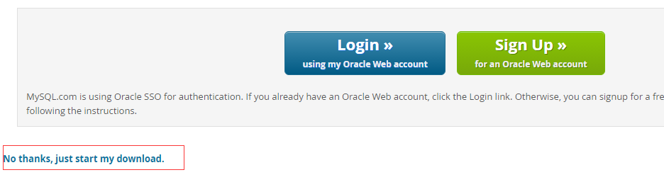
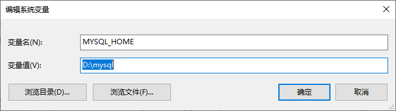
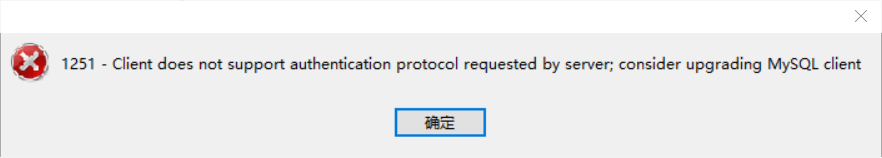

Windows での MySQL インストール
Windows での MySQL インストールは比較的簡単です。最新版は MySQL ダウンロード からダウンロードできます（詳細なインストール手順は：Windows での MySQL インストール を参照）。

Download ボタンをクリックしてダウンロードページに進み、下図の No thanks, just start my download. をクリックするとすぐにダウンロードが始まります：

ダウンロード後、解凍すると以下のようになります（インストールファイルは D:\mysql に置きました）：

次に、MySQL の設定ファイルを作成します
解凍したフォルダ D:\mysql を開き、そのフォルダ内に my.ini 設定ファイルを作成し、以下の基本情報を記述します：
[client] |
次に、MySQL データベースを起動します：
管理者権限で cmd コマンドラインツールを開き、ディレクトリを移動：
cd C:\web\mysql-8.0.11\bin |
データベースを初期化：
mysqld --initialize --console |
注意：このコマンドでエラーが出る場合があります：
mysqld : "mysqld" はコマンドレット、関数、スクリプトファイル、または実行可能なプログラムの名前として認識されません。名前の綴りを確認し、パスが含まれている場合はパスが正しいことを確認してから再試行してください。
解決方法は2つ：1、コマンドの前に ./ を付ける（例：$ ./mysqld --initialize --console）2、MySQL の環境変数を設定
実行後、root ユーザーの初期パスワードが出力されます：
... |
<!wbLjV?/3uq が初期パスワードです。後でログイン時に必要となり、ログイン後にパスワードを変更することもできます。
以下のコマンドでインストール：
mysqld install |
起動は以下のコマンド：
net start mysql |
MySQL にログイン
MySQL サービスが起動している場合、MySQL 付属のクライアントツールで MySQL データベースにログインできます。まずコマンドプロンプトを開き、以下の形式でコマンドを入力：
mysql -h ホスト名 -u ユーザー名 -p |
パラメータ説明：
- -h : クライアントが接続する MySQL ホスト名を指定。ローカル（localhost または 127.0.0.1）なら省略可。
- -u : ログインユーザー名。
- -p : パスワードを使ってログインすることを指定。ユーザー名のパスワードが空の場合は省略可。
ローカルの MySQL にログインする場合は以下のコマンド：
mysql -u root -p |
Enter キーで確定し、インストールが正しく、MySQL が起動していれば以下のような応答が得られます：
Enter password: |
パスワードがあれば入力、なければそのまま Enter でログイン。ログイン成功後、Welcome to the MySQL monitor… のメッセージが表示されます。
その後、コマンドプロンプトは mysq> となり、コマンド入力待ちになります。exit または quit でログアウト。
MySQL 環境変数の設定
上記インストール時、MySQL のデフォルトインストールパスは D:\mysql です。PC の「プロパティ」→「詳細設定」→「環境変数」→「新規作成」で MYSQL_HOME を作成し、インストールディレクトリを入力：

path を編集し、%MYSQL_HOME%\bin を追加：

cmd を開いて mysql と入力し、動作確認します。
navicat for mysql での接続
navicat for mysql ダウンロード インストール後、navicat を起動
クライアントは navicat for mysql を使用。本地に mysql 8.0 をインストール済みですが、接続時に以下のエラーが出る場合があります：

解決方法：
このコマンドは2つの意味があります。1つ目は root のパスワードを ‘root’ に変更すること。2つ目は mysql_native_password で新しいパスワードをエンコードすることです。
ALTER USER 'root'@'localhost' IDENTIFIED WITH mysql_native_password BY 'root'; |
詳細なエラー情報は navicat for mysql 接続時エラー：1251… を参照してください。